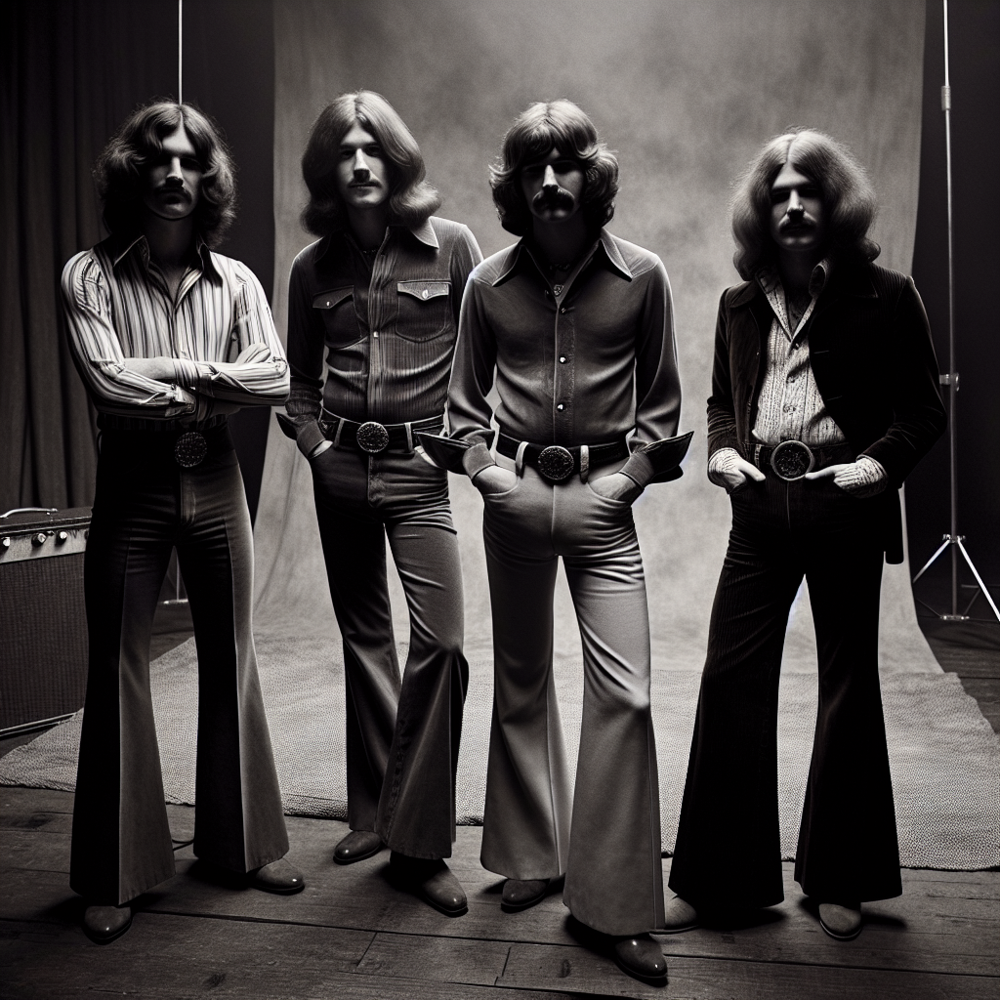

~ The Story ~
Oh man, Inu-K-Trkadeka was something else! I remember the first time I saw them play at this tiny club in Tokyo around '75. Picture it: the fusion of C86 Jangle Pop with a dash of Soul that just hit you right in the chest. These guys were wild!
Let me spill the beans on the band members. First, there was Kenji "Kuma" Nakamura on lead vocals. Kenji was this hurricane of energy, always leaping around the stage. He had this gritty voice that just blended perfectly with the jangly guitars and soulful beats.
Speaking of guitars, their lead guitarist, Aiko "Ace" Tanaka, was a sight to behold. Her riffs were sharp and precise, with this knack for crafting melodies that stuck in your head for days. Aiko was the quiet genius of the group, always playing it cool with a sly smile.
On bass, they had Daisuke "Dai" Yamaguchi. He was the heartbeat of the band, and his laid-back persona gave the band their groove. Dai had this uncanny ability to lock in with the drums and carry the entire room along with him.
The drummer, Yuki "Bam Bam" Suzuki, lived up to his nickname. Yuki was a riot, both on and off the stage, pounding away at the drums like there was no tomorrow. His beats were the backbone of their confrontational style.
Together, they were pure magic. The best part? They met by complete accident at a local ramen shop, jamming on chopsticks and soup spoons one rainy afternoon. Before long, they were the talk of the Tokyo music scene!
~ Band Photo ~

Mgmt: Inu-K-Trkadeka Artists Group / Tokyo, Japan
Kenji "Kuma" Nakamura, Aiko "Ace" Tanaka, Daisuke "Dai" Yamaguchi, Yuki "Bam Bam" Suzuki
~ The Members ~
| Kenji "Kuma" Nakamura | lead vocals |
| Kenji was this hurricane of energy, always leaping around the stage with a gritty voice that blended perfectly with the jangly guitars and soulful beats. | |
| Aiko "Ace" Tanaka | lead guitar |
| Aiko was the quiet genius of the group, known for her sharp and precise riffs and a knack for crafting melodies that stuck in your head for days. | |
| Daisuke "Dai" Yamaguchi | bass |
| Dai was the laid-back heartbeat of the band, with an uncanny ability to lock in with the drums and carry the entire room along with him. | |
| Yuki "Bam Bam" Suzuki | drums |
| Yuki was a riot, both on and off the stage, pounding away at the drums like there was no tomorrow with beats that were the backbone of their confrontational style. | |
~ Discography ~
| Electric Chrysanthemum (1975) | |
| |
| Jangle in the Geisha's Garden (1976) | |
| |
| Neon Soul Odyssey (1977) | |
| |